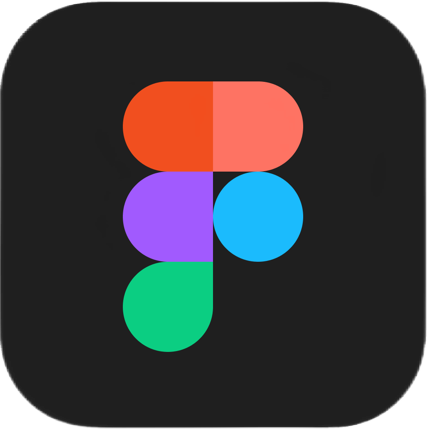
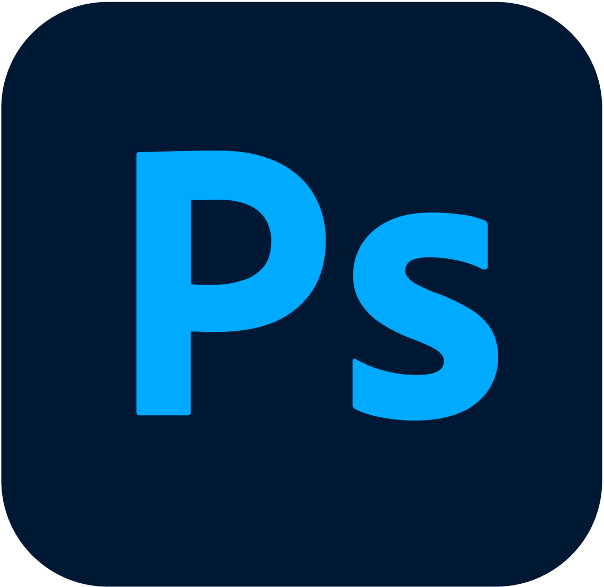
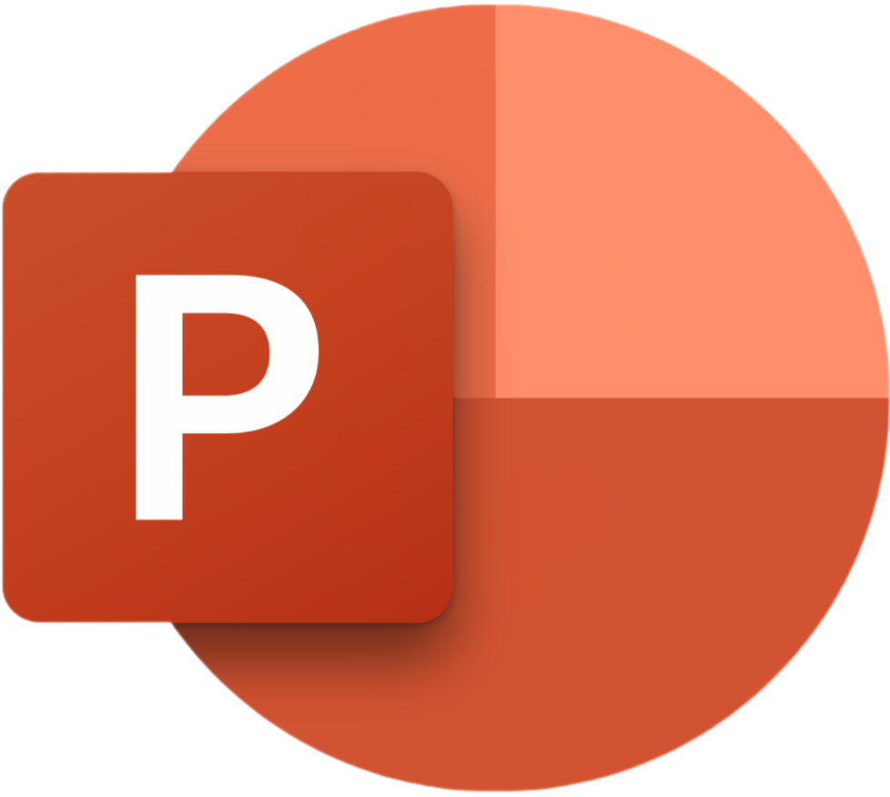

Обо мне
Привет! Меня зовут Иван Кораблев. Я студент группы 2271, обучающийся на Бизнес-Информатику. Увлекаюсь разработкой сайтов, изучаю новые технологии и стараюсь создавать интересные и удобные веб-ресурсы. Мне нравится учиться и постоянно расширять свои знания и навыки.В свободное время от учебы я знаимаеюсь фото и видио редакцией, а также созданием музыки.
Мои компетенции
- Figma
- Photoshop
- PowerPoint
- FL Studio
- VS Studio
Услуги
- Создание логотипов
- Редактирования фотографий
- Видео монтаж
- Создание презентаций
- Сведение вокала
- Создание музыки любого жанра
- Написание простейших программ на phyton
- Дизайн сайтов